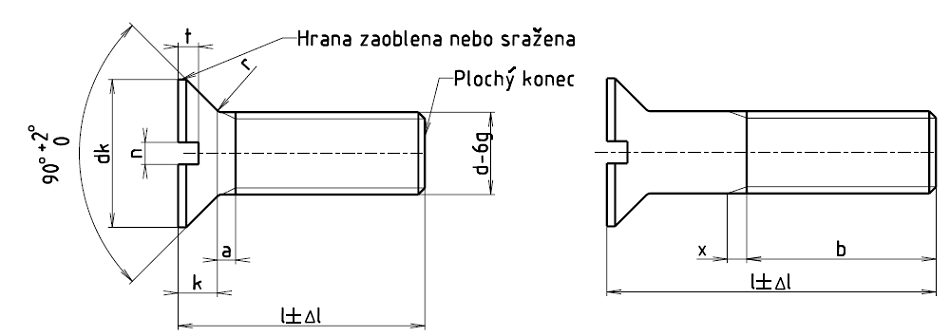

Příklad označení zápustného šroubu se závitem M5, délky l = 20 mm, pevnostní třídy 4.8:
ZÁPUSTNÝ ŠROUB ISO 2009 - M5 ×20 – 4.8
| Závit | M1,6 | M2 | M2,5 | M3 | (M3,5) | M4 | M5 | M6 | M8 | M10 |
|---|---|---|---|---|---|---|---|---|---|---|
| rozteč P | 0,35 | 0,4 | 0,45 | 0,5 | 0,6 | 0,7 | 0,8 | 1 | 1,25 | 1,5 |
| amax. | 0,7 | 0,8 | 0,9 | 1 | 1,2 | 1,4 | 1,6 | 2 | 2,5 | 3 |
| bmin. | 25 | 25 | 25 | 25 | 38 | 38 | 38 | 38 | 38 | 38 |
| dk max.1) | 3 | 3,8 | 4,7 | 5,5 | 7,3 | 8,4 | 9,3 | 11,3 | 15,8 | 18,3 |
| dk min.1) | 2,7 | 3,5 | 4,4 | 5,2 | 6,94 | 8,04 | 8,94 | 10,87 | 15,37 | 17,78 |
| kmax.1) | 1 | 1,2 | 1,5 | 1,65 | 2,35 | 2,7 | 2,7 | 3,3 | 4,65 | 5 |
| n | 0,4 | 0,5 | 0,6 | 0,8 | 1 | 1,2 | 1,2 | 1,6 | 2 | 2,5 |
| nmax. | 0,6 | 0,7 | 0,8 | 1 | 1,2 | 1,51 | 1,51 | 1,91 | 2,31 | 2,81 |
| nmin. | 0,46 | 0,56 | 0,66 | 0,86 | 1,06 | 1,26 | 1,26 | 1,66 | 2,06 | 2,56 |
| rmax. | 0,4 | 0,5 | 0,6 | 0,8 | 0,9 | 1 | 1,3 | 1,5 | 2 | 2,5 |
| tmax. | 0,50 | 0,6 | 0,75 | 0,85 | 1,2 | 1,3 | 1,4 | 1,6 | 2,3 | 2,6 |
| tmin. | 0,32 | 0,4 | 0,5 | 0,6 | 0,9 | 1,0 | 1,1 | 1,2 | 1,8 | 2,0 |
| xmax. | 0,9 | 1 | 1,1 | 1,25 | 1,5 | 1,75 | 2 | 2,5 | 3,2 | 3,8 |
| Materiál | Oceli | Antikorozní oceli | Neželezné kovy | |
|---|---|---|---|---|
| Všeobecné požadavky | Mezinárodní norma | ISO 8992 | ||
| Mechanické vlastnosti | Pevnostní třída | 4.8, 5.8 | A2–50, A2–70 | |
| Mezinárodní normy | ISO 898-1 | ISO 3506 | ISO 8839 | |
| Mezní rozměry, tolerance tvaru a polohy | Výrobní třída | A | ||
| Mezinárodní norma | ISO 4759-1 | |||
| Povrch | hladký Požadavky na elektrolyticky vyloučené povlaky viz ISO 4042. Jiná povrchová ochrana dle dohody. Mezní hodnoty povrchových vad viz ISO 6157-4 a ISO 6157-3 |
|||